Import statements:
from bs4 import BeautifulSoup
import requests
import pandas as pd
import re
from textblob import TextBlob
from tqdm.notebook import tqdm
import numpy as np
import seaborn as sns
import matplotlib.pyplot as plt
%matplotlib inline
Getting the link to each page on the episode transcripts list:
html_page1 = requests.get('https://transcripts.foreverdreaming.org/viewforum.php?f=165')
html_page2 = requests.get('https://transcripts.foreverdreaming.org/viewforum.php?f=165&start=25')
html_page3 = requests.get('https://transcripts.foreverdreaming.org/viewforum.php?f=165&start=50')
Scraping the content of each page using BeautifulSoup:
soup1 = BeautifulSoup(html_page1.content, 'html.parser')
soup2 = BeautifulSoup(html_page2.content, 'html.parser')
soup3 = BeautifulSoup(html_page3.content, 'html.parser')
Creating empty lists to store relevant content:
ep_links = []
ep_titles = []
Collecting the episode titles and links to each episode transcript:
ep_list1 = soup1.findAll('td', class_ = 'topic-titles row2')
for i in ep_list1[2:]:
ep_links.append('https://transcripts.foreverdreaming.org/'+i.find('h3')
.find('a')['href'][2:])
ep_titles.append(i.text.strip())
ep_list2 = soup2.findAll('td', class_ = 'topic-titles row2')
for i in ep_list2[2:]:
ep_links.append('https://transcripts.foreverdreaming.org/'+i.find('h3')
.find('a')['href'][2:])
ep_titles.append(i.text.strip())
ep_list3 = soup3.findAll('td', class_ = 'topic-titles row2')
for i in ep_list3[2:]:
ep_links.append('https://transcripts.foreverdreaming.org/'+i.find('h3')
.find('a')['href'][2:])
ep_titles.append(i.text.strip())
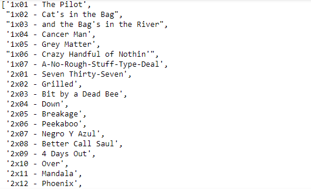
Getting each individual characters transcript stats per episode:
season = []
episode = []
character = []
line = []
for i, link in enumerate(ep_links):
html_page = requests.get(ep_links[i])
soup = BeautifulSoup(html_page.content, 'html.parser')
for j in soup.find('div', class_ = 'postbody').findAll('p'):
if 'Walter' in j.text:
season.append(ep_titles[i][:1])
episode.append(ep_titles[i][2:][:3])
character.append('Walter')
line.append(j.text[8:])
elif 'Skyler' in j.text:
season.append(ep_titles[i][:1])
episode.append(ep_titles[i][2:][:3])
character.append('Skyler')
line.append(j.text[8:])
elif 'Marie' in j.text:
season.append(ep_titles[i][:1])
episode.append(ep_titles[i][2:][:3])
character.append('Marie')
line.append(j.text[7:])
elif 'Hank' in j.text:
season.append(ep_titles[i][:1])
episode.append(ep_titles[i][2:][:3])
character.append('Hank')
line.append(j.text[6:])
elif 'Jesse' in j.text:
season.append(ep_titles[i][:1])
episode.append(ep_titles[i][2:][:3])
character.append('Jesse')
line.append(j.text[7:])
elif 'Steve' in j.text:
season.append(ep_titles[i][:1])
episode.append(ep_titles[i][2:][:3])
character.append('Steve')
line.append(j.text[7:])
Putting the lists into a dataframe:
df = pd.DataFrame()
df['Season'] = season
df['Episode'] = episode
df['Character'] = character
df['Line'] = line
df.head()
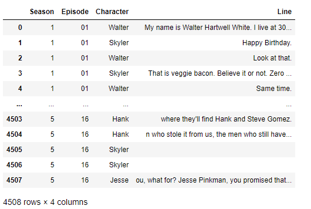
Dropping the last 3 seasons:
df.drop(df[(df['Season'] == '3')].index, inplace=True)
df.drop(df[(df['Season'] == '4')].index, inplace=True)
df.drop(df[(df['Season'] == '5')].index, inplace=True)
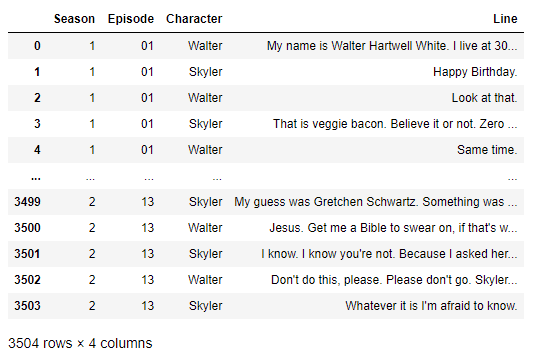
Exploring the data:
df.shape
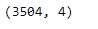
df.info()
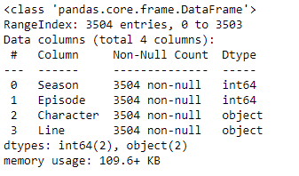
df[df.duplicated()]
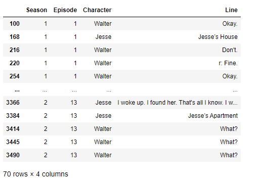
df.isna().sum()
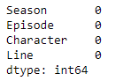
Removing motions from the line text:
df[df['Line'].str.contains('\([^)]*\)')]
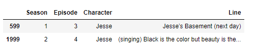
df['Motion'] = df['Line'].apply(lambda x: re.findall(r'\([^)]*\)', x))
df['Line'] = df['Line'].apply(lambda x: re.sub(r'\([^)]*\)', '', x))
df[df['Line'].str.contains('\([^)]*\)')]
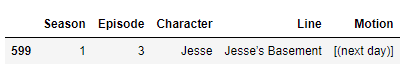
Adding polarity and subjectivity to the dataset:
tqdm.pandas()
df['Polarity'] = df['Line'].progress_apply(lambda x: TextBlob(x).sentiment[0])
df['Subjectivity'] = df['Line'].progress_apply(lambda x: TextBlob(x).sentiment[1])
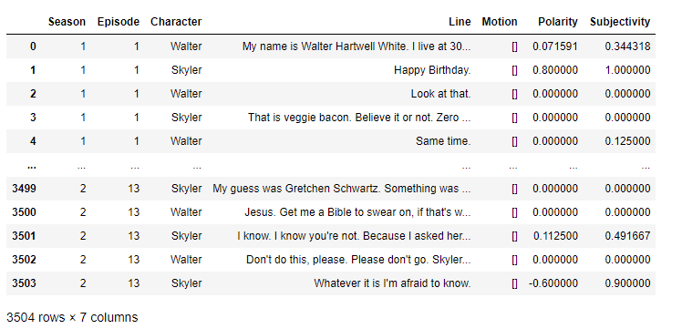
Line Count by Season:
df2 = pd.DataFrame(df.groupby('Season').size(), columns=['Line_Count'])
plt.figure(figsize = (10, 6))
c = ['yellow', 'royalblue']
plt.bar(df2.index, df2['Line_Count'], color=c)
plt.title('Total Lines per Season', size = 30)
plt.xlabel('Season', size = 20)
plt.xticks(fontsize = 16)
plt.ylabel('Number of Lines', size = 20)
plt.yticks(fontsize = 16)
plt.show()

df3 = pd.DataFrame(df.groupby('Character').size(), columns=['Line_Count'])
plt.figure(figsize = (10, 6))
c = ['yellow', 'royalblue', 'green', 'darkviolet', 'deeppink', 'lightblue']
plt.bar(df3.index, df3['Line_Count'], color=c)
plt.title('Total Lines per Main Character', size = 30)
plt.xlabel('Character', size = 20)
plt.xticks(fontsize = 16)
plt.ylabel('Number of Lines', size = 20)
plt.yticks(fontsize = 16)
plt.show()
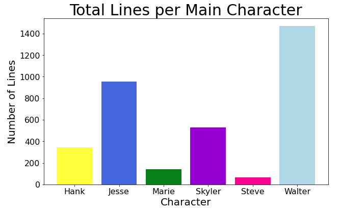
df4 = pd.DataFrame(df.groupby(['Season', 'Character']).size(), columns=['Line_Count'])
df4.unstack(0).plot.barh(figsize=(10,6))
plt.title('Total Lines per Season per Character', size = 30)
plt.xlabel('Line Count', size = 20)
plt.xticks(fontsize = 16)
plt.ylabel('Character', size = 20)
plt.yticks(fontsize = 16)
plt.legend(['Season 1','Season 2'],loc='lower right')
plt.show()
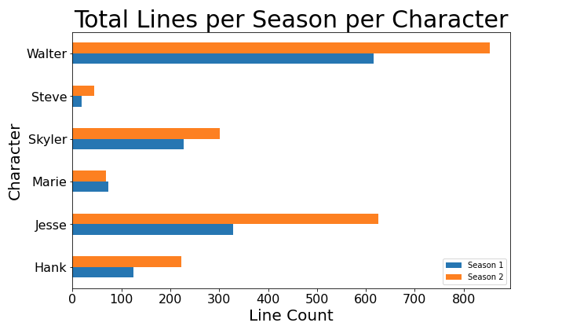